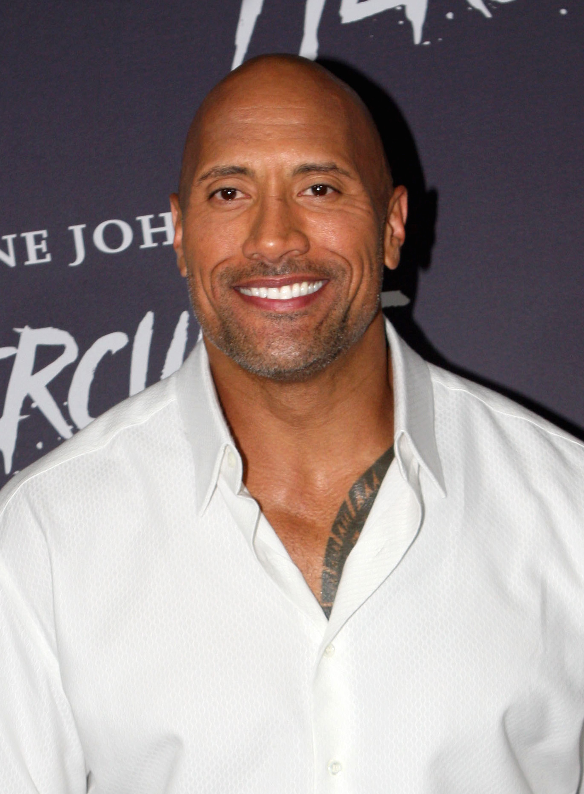

Дуэ́йн Ду́глас Джо́нсон
Актёр - Реслер
Его считают одним из величайших рестлеров всех времён, до начала актёрской карьеры он восемь лет выступал в WWE.
Его фильмы собрали более 3,5 миллиардов долларов в Северной Америке и более 10,5 миллиардов долларов по всему
миру, что делает его одним из самых кассовых и высокооплачиваемых актёров в мире.
Джонсон играл в американский футбол в университете Майами и выиграл национальный чемпионат в 1991 году. Он
стремился сделать карьеру в футболе, но остался не выбранным на драфте НФЛ 1995 года. Он подписал контракт с
командой «Калгари Стампидерс» из Канадской футбольной лиги, но был исключён из команды в первом сезоне. Отец
Джонсона Рокки и дед по материнской линии Питер Майвиа были рестлерами, и в 1996 году он заключил контракт с
World Wrestling Federation (WWF, ныне WWE). Он стал известным после того, как разработал себе образ
харизматичного трэш-токера и помог начать эру Attitude — период бума в индустрии в конце 1990-х и начале 2000-х
годов. Джонсон покинул WWE в 2004 году, вернулся туда в 2011 году и выступал до 2013 года, а затем иногда
появлялся в компании до окончания карьеры в 2019 году. Он является 10-кратным чемпионом мира, а также двукратным
интерконтинентальным чемпионом WWF, пятикратным командным чемпионом, победителем «Королевской битвы» 2000 года и
шестым чемпионом Тройной короны. Джонсон стал хедлайнером самого широко проданного PPV-шоу в истории рестлинга —
WrestleMania XXVIII.
В 2000 году Джонсон написал автобиографическую книгу «Скала говорит», которая дебютировала на первом месте в
списке бестселлеров New York Times. С 2001 года он начал сниматься в кино, а в 2002 году исполнил главную роль в
фильме «Царь скорпионов». Его гонорар в 5,5 миллионов долларов был занесён в Книгу рекордов Гиннесса как
наивысший гонорар за первую главную роль. Кроме того, Джонсон снялся в таких фильмах, как «Мумия возвращается»,
«Широко шагая», «Сокровище Амазонки», «Doom», «Зубная фея», «Копы в глубоком запасе», «G.I. Joe: Бросок кобры
2», «Геракл», «Джуманджи: Зов джунглей», «Джуманджи: Новый уровень», а также в серии «Форсаж». Джонсон
спродюсировал и снялся в комедийно-драматическом сериале HBO «Игроки» (2015—2019), а также стал героем и
продюсером автобиографического ситкома «Молодой Скала» (с 2021).
В августе 2018 года Джонсон занял второе место в рейтинге самых высокооплачиваемых актёров года по версии
журнала Forbes. За 12 месяцев он заработал $124 млн. В августе 2019 года Джонсон занял первое место в
рейтинге самых высокооплачиваемых актёров года по версии журнала Forbes. За 12 месяцев он заработал $89,4 млн. В
2016 и 2019 годах Джонсон был назван журналом Time одним из самых влиятельных людей мира. В 2020 году стал
совладельцем лиги американского футбола XFL.
Где снимался:
1 - Форсаж 8
2 - Джумаджи
3 - Чёрный Адам
4 - Красное Уведомление
wikipedia